Cloud music from the Linux terminal
Spotify, Google Play Music, Soundcloud, YouTube, Dirble, Plex, Chromecast and more.
What is Tizonia?
- An open-source command-line music player for Linux.
- With support for Spotify (Premium), Google Play Music (free and paid tiers), YouTube, SoundCloud, Dirble, Plex servers and Chromecast devices.
- The first open-source implementation of OpenMAX IL 1.2.


Other Features
- Player for local MP2, MP3, AAC, OGG/VORBIS, FLAC, OPUS, and WAV/AIFF files.
- SHOUTcast/Icecast LAN server for local MP3 files.
- MPRISv2 remote control interface.
- Multimedia framework based on OpenMAX IL 1.2. No ffmpeg, libav, gstreamer or libvlc required.
Roadmap
- Pandora support.
- Tidal support.
- YouTube live streams.
- REPL command line interface.
- Mac OS support.
* The Spotify logo is the sole property of Spotify or its licensors. * Google Play Music is a trademark of Google LLC. * YouTube is a trademark of Google LLC. * The SoundCloud logo is property of SoundCloud Limited. * The Dirble logo is property of Håkan Nylén. * Google Chromecast is a trademark of Google LLC. * Plex is a trademark of Plex, Inc.